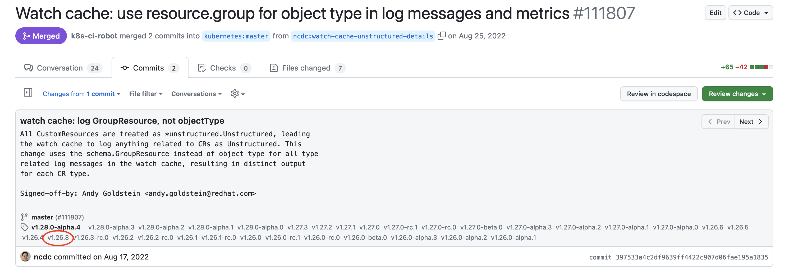

Rebasing Kubernetes¶
This describes the process of rebasing kcp onto a new Kubernetes version. For the examples below, we'll be rebasing onto v1.33.3.
Note
This guide has last been used before the monorepo transition. Beware that since then the procedure is significantly different.
1. Update kcp-dev/apimachinery¶
- Create a new branch for the update, such as
1.31-prep. - Update go.mod:
- You may need to change the go version at the top of the file to match what's in go.mod in the root of the Kubernetes repo. This is not required, but probably a good idea.
- Update the primary Kubernetes dependencies:
- Run
go mod tidy. - Manually review the code that is upstream from
third_partyand make the same/similar edits to anything that changed upstream. For example, we maintain a slightly modified copy of the shared informer code. - Run
make lint test. Fix any issues you encounter. - Commit your changes.
- Push to your fork.
- Open a PR; get it reviewed and merged.
2. Update kcp-dev/code-generator¶
- Create a new branch for the update, such as
1.26-prep. - Update
go.mod: - You may need to change the go version at the top of the file to match what's in go.mod in the root of the Kubernetes repo. This is not required, but probably a good idea.
- Update the primary Kubernetes dependencies:
- Run
go mod tidy. - Repeat step 2 for
examples/go.mod: - Update generators, if needed:
- Manually review upstream to check for any changes to these generators in the
kubernetesrepository:- staging/src/k8s.io/code-generator/cmd/client-gen
- staging/src/k8s.io/code-generator/cmd/informer-gen
- staging/src/k8s.io/code-generator/cmd/lister-gen
- If there were any substantive changes, make the corresponding edits to our generators.
- You'll probably want to commit your changes at this point.
- Run
make codegen. You'll probably want to commit these changes as a standalone commit. - Run
make lint test buildand fix any issues you encounter. - Commit any remaining changes.
- Push to your fork.
- Open a PR; get it reviewed and merged.
3. Update kcp-dev/client-go¶
- Create a new branch for the update, such as
1.26-prep. - Update go.mod:
- You may need to change the go version at the top of the file to match what's in go.mod in the root of the Kubernetes repo. This is not required, but probably a good idea.
- Update the
kcp-dev/apimachinerydependency: - That should have updated the primary Kubernetes dependencies, but in case it didn't, you can do so manually:
- Run
go mod tidy. - Run
hack/populate-copies.sh, this will copy files originally copied from upstream over the local copies. Review the changes and ensure changes from upstream are handled. - Run
make codegen. You'll probably want to commit these changes as a standalone commit. - Run
make lintand fix any issues you encounter. - Commit any remaining changes.
- Push to your fork.
- Open a PR; get it reviewed and merged.
4. Update kcp-dev/kubernetes¶
Terminology¶
Commits merged into kcp-dev/kubernetes follow this commit message format:
UPSTREAM: <UPSTREAM PR ID>- The number identifies a PR in upstream kubernetes
(i.e.
https://github.com/kubernetes/kubernetes/pull/<pr id>) - A commit with this message should only be picked into the subsequent rebase branch if the commits of the referenced PR are not included in the upstream branch.
- To check if a given commit is included in the upstream branch, open the referenced
upstream PR and check any of its commits for the release tag (e.g.
v.1.26.3) targeted by the new rebase branch. For example:
UPSTREAM: <carry>:- A persistent carry that should probably be picked for the subsequent rebase branch.
- In general, these commits are used to modify behavior for consistency or compatibility with kcp.
UPSTREAM: <drop>:- A carry that should probably not be picked for the subsequent rebase branch.
- In general, these commits are used to maintain the codebase in ways that are branch-specific, like the update of generated files or dependencies.

Rebase Process¶
- First and foremost, take notes of what worked/didn't work well. Update this guide based on your experiences!
- Remember, if you mess up,
git rebase --abortandgit reflogare your very good friends! - Terminology:
- "Old" version: the current version of Kubernetes that kcp is using
- "New" version: the new Kubernetes version on top of which you are rebasing
- The
upstreamin e.g.upstream/kcp-feature-logical-cluster-1.24-v3is the name of the git remote that points to github.com/kcp-dev/kubernetes. Please adjust the commands below if your remote is named differently. - Prepare a list of commits:
- Checkout the current fork branch:
- Export the commits to cherry-pick them: You will use this commits.txt to also note conflicts and changes you had to make, so reviewers know where to focus their attention.
- Prepare a branch to cherry-pick the commits onto:
Note: To make validating changes easier you can use these functions:
# record the changed files between the version kcp will jump
git diff --name-only v1.32.3 v1.33.3 > ../changed_files.txt
# list_changed_files lists the files changed in the current commit
list_changed_files() {
for changed_file in $(git diff --name-only @ @~1); do
if grep -q "$changed_file" ../changed_files.txt; then
echo "./$changed_file"
fi
done
}
# view_changed_files shows the diff of the files changed in the current
# commit
view_changed_files() {
local changed="$(list_changed_files)"
[[ -z "$changed" ]] && return 0
git diff-tree -r -p @ -- $changed
}
If a commit applied clean and list_changed_files shows no output, you
can move on to the next commit because there were no changes to the
files that commit touched between the two kube versions.
Additionally view_changed_files only shows the changes of the
currently cherry-picked commit to files that were changed between the
two kube versions.
- Cherry-pick each commit one by one.
- If you encounter conflicts resolve them as best as you can.
- If you have to make substantial changes document it in the commit message, add your signed-off-by and add a note in your commits.txt.
-
Check the changes with
list_changed_filesandview_changed_files(see above). -
Check if any new controllers were added to Kubernetes. If so, determine if they are relevant to the control plane, or if they're specific to workloads (anything related to pods/nodes/etc.). If they're for the control plane and you think they should be enabled in kcp, you have 1 of 2 choices:
- Modify the controller in Kubernetes to be logical cluster aware
- Add code to kcp to spawn a new controller instance scoped to a single logical cluster
For option 1, follow what we did in pkg/controller/namespace/namespace_controller.go.
For option 2, follow what we did in kcp in either the garbage collector or quota controllers.
-
Check if any new admission plugins were added to Kubernetes. Decide if we need them in kcp. If so, make a note of them, and we'll add them to kcp below.
-
Update kcp dependencies, for all kcp repositories that changed. For example:
-
Commit the dependency updates:
-
Update the vendor directory:
-
Update generated clients, informers, listers, etc. because we generate logical cluster aware versions of these for Kubernetes to use:
This can delete the zz_generated.validations.go - this is expected
as we drop the validation-gen generator. See
https://github.com/kcp-dev/kcp/issues/3562a for details.
This step can pin kube dependencies to versions instead of v0.0.0, which can lead to opaque errors laters. To fix this run:
gsed -e '/k8s.io/ s#v0.33.3#v0.0.0#' -i "go.mod"
find staging -iname go.mod \
| while read go_mod; do
gsed -e '/k8s.io/ s#v0.33.3#v0.0.0#' -i "$go_mod"
done
-
Commit the generated code changes:
-
Push your commits to your fork of Kubernetes in GitHub.
-
Open a pull request for review against the baseline branch, e.g. kcp-1.26-baseline, but mark it
WIPand maybe even open it in draft mode - you don't want to merge anything just yet.
5. Update kcp-dev/kcp¶
- At this point, you're ready to try to integrate the updates into kcp proper. There is still likely a good amount of work to do, so don't get discouraged if you encounter dozens or hundreds of compilation issues at this point. That's totally normal!
- Update go.mod:
- You'll need to adjust the versions of kcp-dev/apimachinery, client-go, and logicalcluster to match any changes you made in previous steps. Make sure the versions that are in the Kubernetes go.mod match the versions used here.
- If any new staging repositories were added in between the old and new Kubernetes versions, you'll need to add
those in the
replacedirective at the bottom of go.mod. For example, in the 1.31 rebase, we had to add 4:- k8s.io/dynamic-resource-allocation
- k8s.io/kms
- k8s.io/sample-cli-plugin
- k8s.io/sample-controller
- Go ahead and make a commit here, as the next change we'll be making is to point kcp at your local checkout of Kubernetes.
-
Point kcp at your local checkout of Kubernetes:
# Change KUBE per your local setup KUBE=../../../go/src/k8s.io/kubernetes gsed -i "s,k8s.io/\(.*\) => .*/kubernetes/.*,k8s.io/\1 => $KUBE/vendor/k8s.io/\1,;s,k8s.io/kubernetes => .*,k8s.io/kubernetes => $KUBE," go.modWarning
Don't commit your changes to go.mod/go.sum. They point to your local file system.
-
Resolve any conflicts
- Run
make modules - Run
make codegen - Keep iterating to get all the code to compile
- Get the
lintandtestmake targets to pass - Get the
e2e-*make targets to pass.
6. Test CI¶
- Undo your changes to go.mod and go.sum that point to your local checkout:
- Update go.mod to point to your rebase branch in your Kubernetes fork:
- Commit this change with a message such as
UNDO: my Kubernetes. We won't be using this commit when it's time to merge, so we make it easy to find. - Open a pull request in kcp. Wait for CI results. The
depsjob will always fail at this point because it's pointing to your fork of Kubernetes. This is expected, so don't worry. Your job at this point is to get all the other CI jobs to pass.
7. Get it Merged!¶
- Once CI is passing (except for the
depsjob, as expected), we're ready to merge! - Coordinate with another project member - show them the test results, then get them to approve your rebase PR in kcp-dev/kubernetes. Get the PR merged (this is something that currently must be done manually - ask someone with merge rights to do it for you if you need help).
- Rename/create a new branch in kcp-dev/kubernetes based off what you just merged into kcp-1.31-baseline - this is
the actual rebase! The new branch could be named something like
kcp-1.31. - Back in your local checkout of kcp, update to the kcp-dev/kubernetes rebase branch:
- Commit this change. You can either squash this with your previous
UNDOcommit (reword it so it's not anUNDOany more), or drop theUNDOcommit and replace it with this one. - Check on CI. Hopefully everything is green. If not, keep iterating on it.
8. Update the Default Branch in kcp-dev/kubernetes¶
- Change it to your new rebase branch, e.g.
kcp-1.31